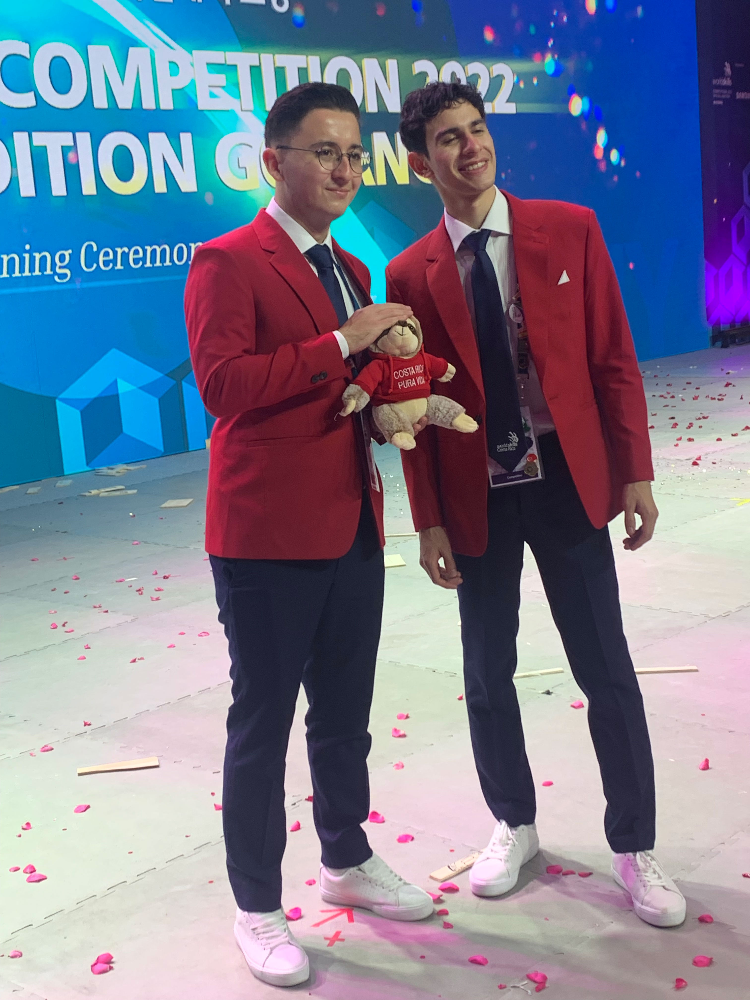
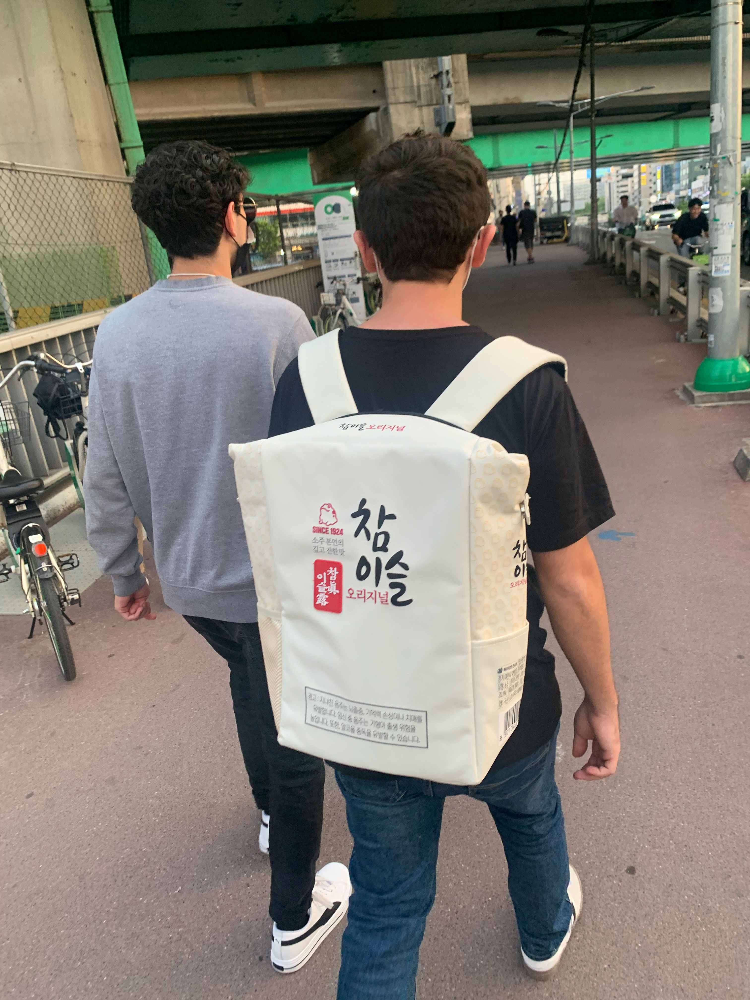
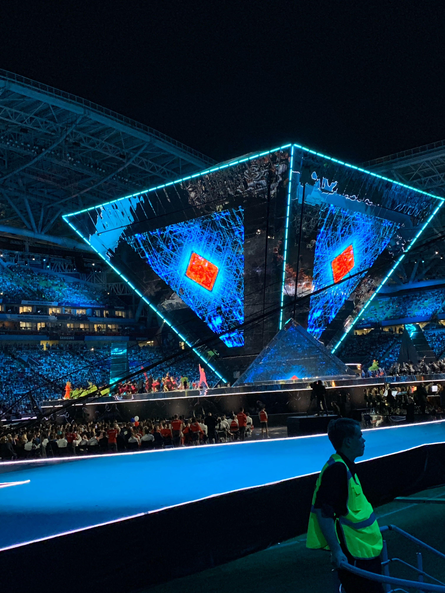
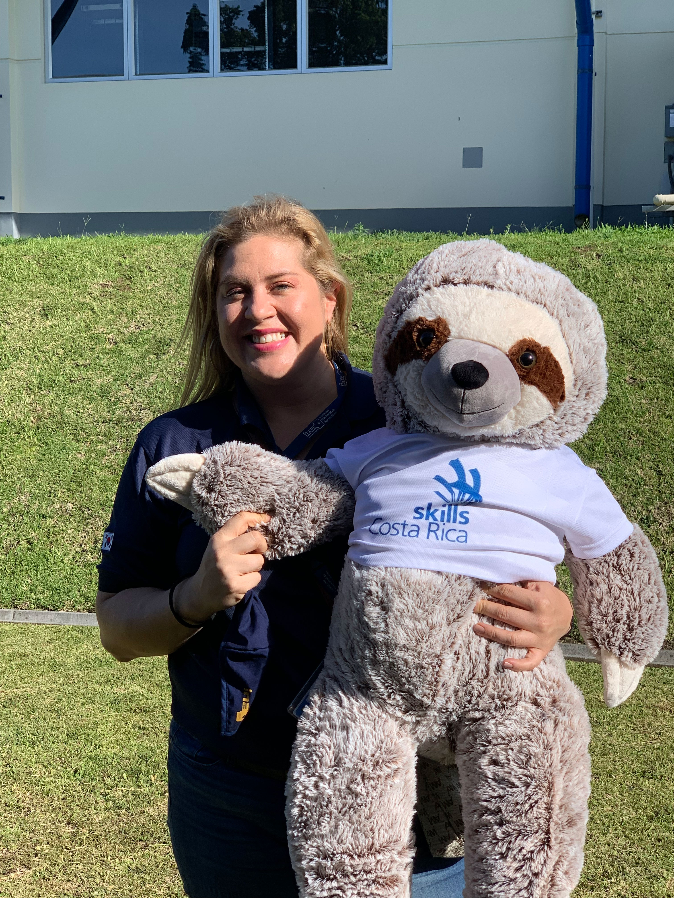
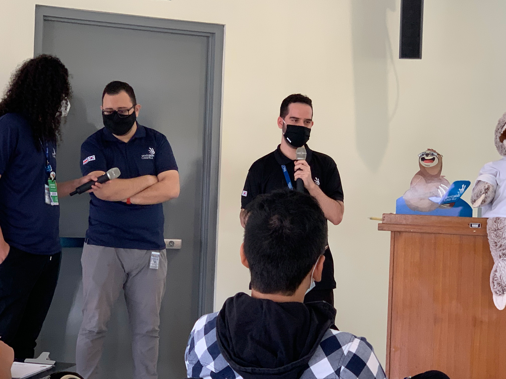
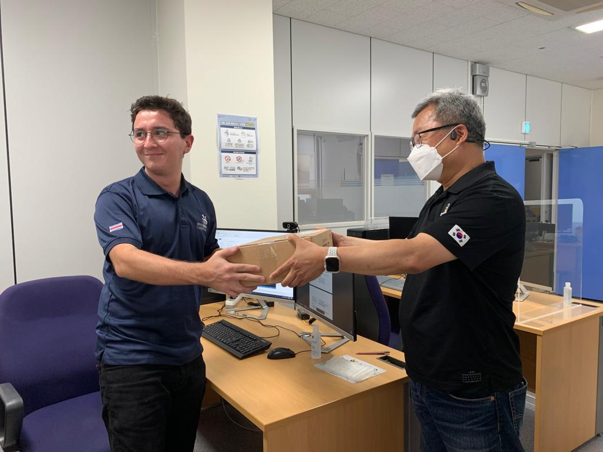
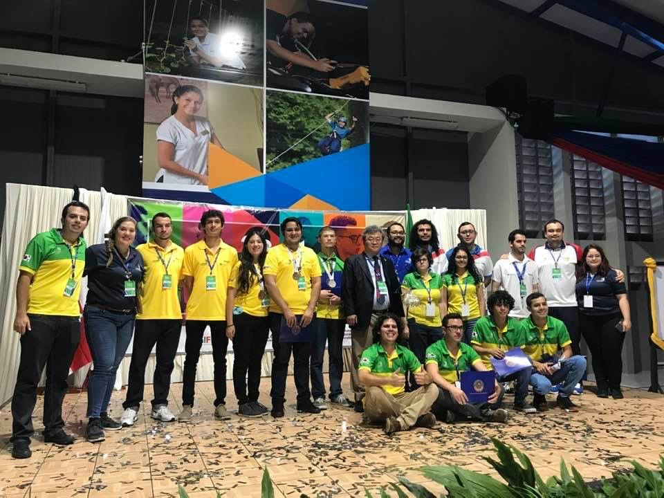

Desarrolla
HABILIDADES
Para desarrollar habilidades, necesitas práctica y perseverancia. No te rindas ante los primeros obstáculos y sigue intentándolo. Cuanto más practiques, más fácil te resultará y más habilidades podrás desarrollar. No te limites a una sola área, explore todas las posibilidades y encontrarás muchas más habilidades de las que imaginas.
Explora
OPORTUNIDADES
Las oportunidades de crecimiento en habilidades técnicas son aquellas posibilidades de trabajo y empleo que se presentan en el mercado laboral. Estas pueden variar según el sector en el que se trabaje y la demanda de empleo en la zona geográfica en la que se busque trabajo. Las oportunidades laborales pueden ser ofrecidas tanto por empresas privadas como públicas, pueden ser de tiempo completo, parcial, temporales o permanentes. Estas oportunidades pueden estar basadas en diferentes habilidades y competencias, educación, experiencia y aptitudes.
Recuerdos
ÚNICOS
La participacion en los procesos de habilidaders técnicas pueden incluir momentos impactantes como un logro importante, superando una situación difícil, o un evento que cambie la vida de manera significativa. Cada uno de estos recuerdos son únicos e irrepetibles y pueden crear una conexión emocional positiva que perdura por el resto de la vida.






